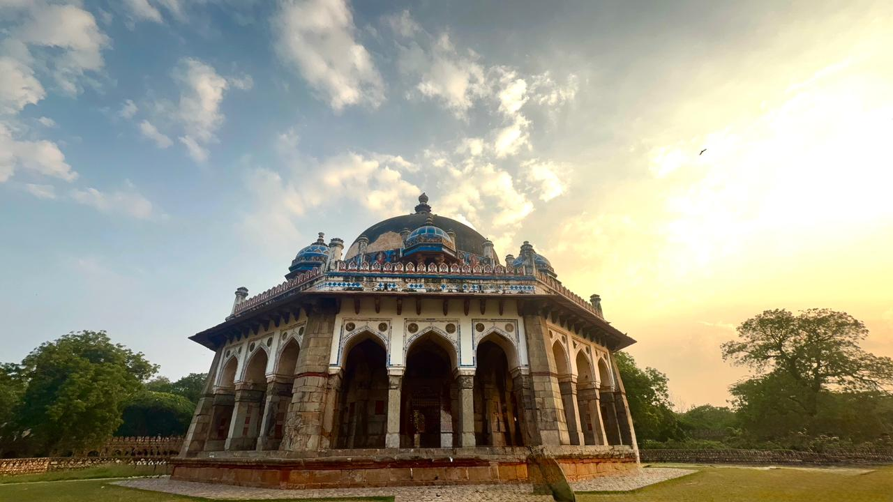
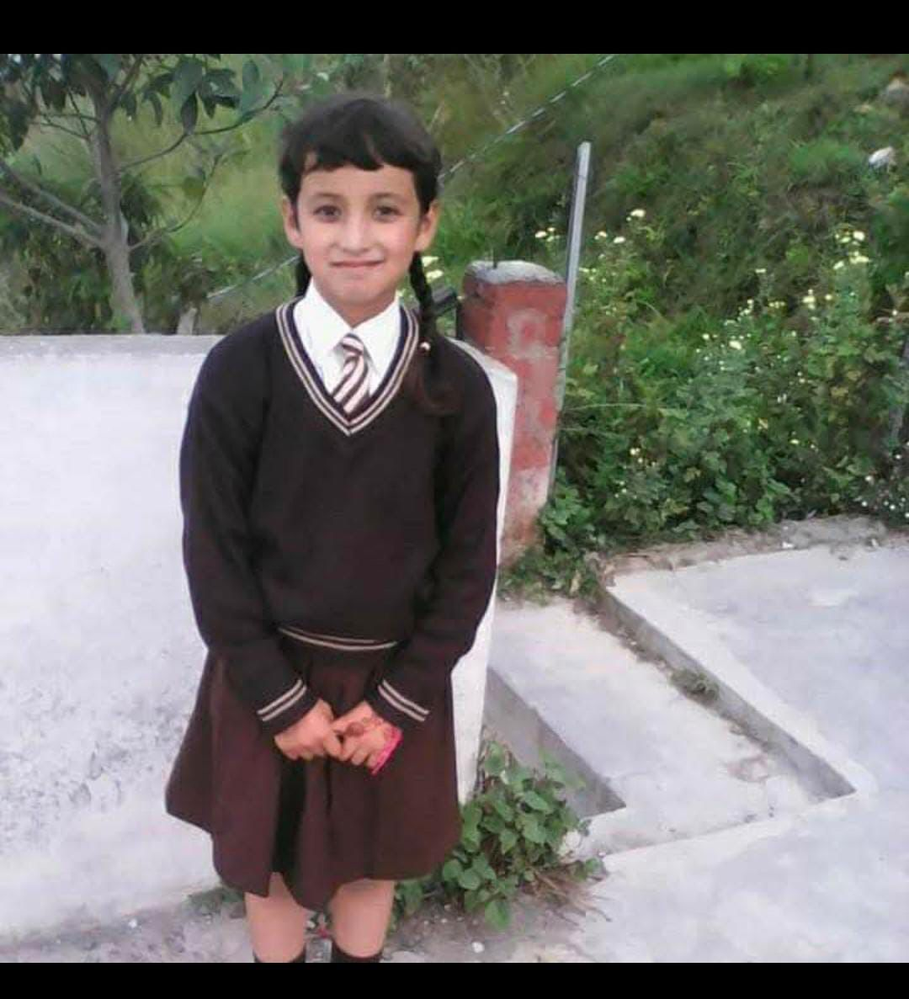
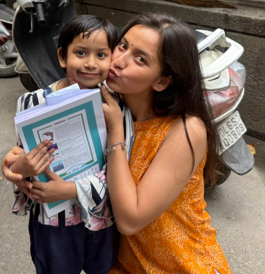

A girl from the misty hills of Nainital, Uttarakhand — driven by curiosity, a love for the open road, and a deep belief that the best things in life are found in new people, good music, and a sky that takes your breath away.

Tech enthusiast and aspiring IT professional — building a foundation in software, data, and systems while chasing a curiosity that never quite sits still.

